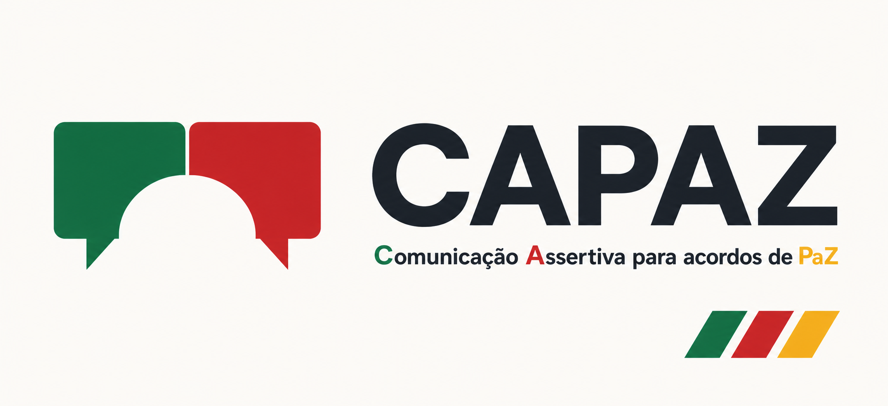

Perceber e regular
Consciência emocional e autorregulação como base para uma comunicação intencional.
- emoções, corpo e interpretações;
- raiva, ativação e escalada;
- protocolo PAUSA;
- fundamentos da CNV.
TJRS · Formação de gestores
Este portal reúne as apresentações, ferramentas e materiais utilizados na formação. Retome os conceitos, pratique com situações reais e encontre apoio para preparar conversas mais conscientes.
Jornada do curso
Abra cada apresentação em uma página própria. Os controles e atalhos do apresentador permanecem isolados do portal.
Consciência emocional e autorregulação como base para uma comunicação intencional.
Contexto, visão sistêmica e linguagem consciente para ampliar compreensão e conexão.
Práticas de empatia e expressão honesta para atravessar conversas difíceis com clareza e humanidade.
Materiais do curso
Arquivos destinados aos participantes. Cada material pode ser visualizado no navegador ou baixado para uso durante as atividades.
Amplia o vocabulário emocional e apoia a identificação do que está presente em uma situação.
PDF · 104 KB · 1 páginaAjuda a investigar os valores humanos ligados aos sentimentos, sem transformar necessidade em exigência.
PDF · 104 KB · 1 páginaRelaciona valência, ativação e sinais corporais para apoiar leitura emocional e autorregulação.
PDF · 104 KB · formato A3
Apoio à aplicação
A CAPAZ é uma assistente de IA para revisar os conteúdos e apoiar sua aplicação em situações da vida e do trabalho.
A CAPAZ oferece apoio educativo. Não substitui orientações institucionais, jurídicas, médicas, psicológicas ou profissionais.
Acessar a CAPAZ no NotebookLMFacilitadores

Facilitador, palestrante e instrutor em programas formativos para órgãos do Poder Judiciário. Atua com liderança, comunicação, negociação, gestão de conflitos, inovação e equipes híbridas.

Pedagogo, professor e formador na administração pública. Atua com educação, comunicação, tecnologias, gestão pública, inovação e desenvolvimento de competências.